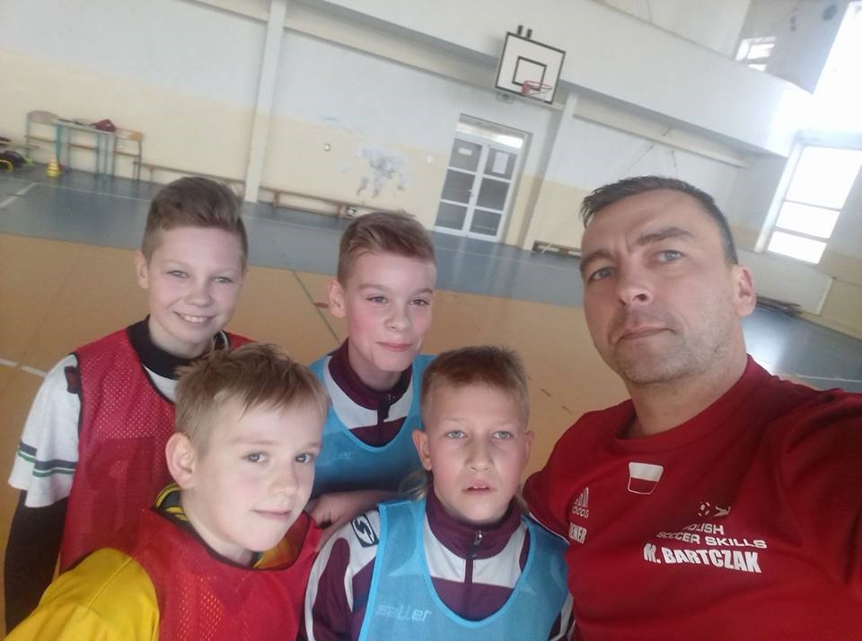

Zapraszamy na trening indywidualny.
Zajęcia skupiają się na indywidualnym treningu techniki piłkarskiej i koordynacyjnych zdolności motorycznych
oraz
taktyki indywidualnej. Treningi prowadzone są w trybie 1 trener maksymalnie 4 zawodników.
Zajęcia są uzupełnieniem treningu klubowego i odbywają się w systemie weekendowym, raz w tygodniu.
Zawodnicy dobierani są w/g kategorii wiekowej i umiejętności.